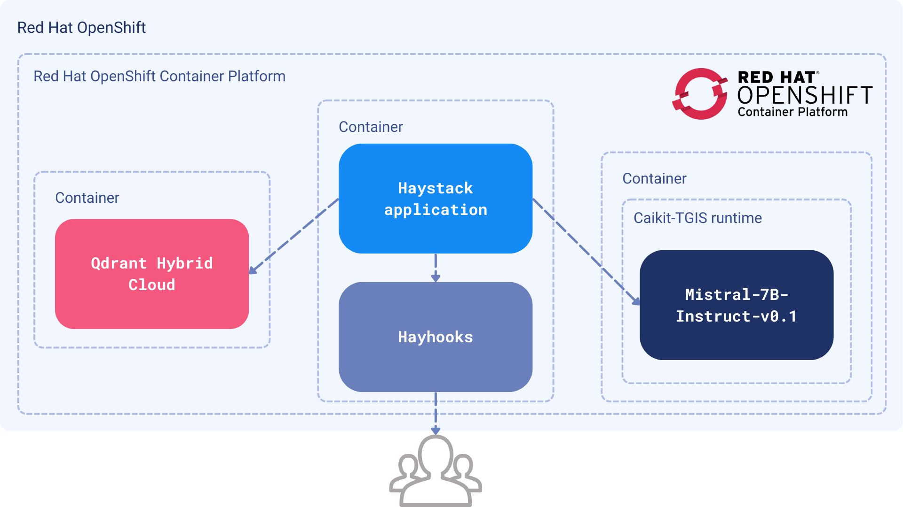
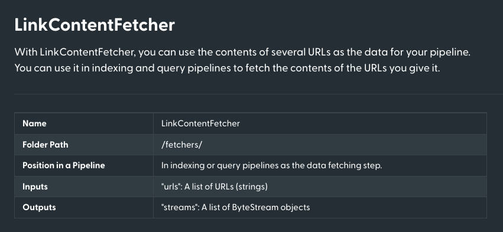
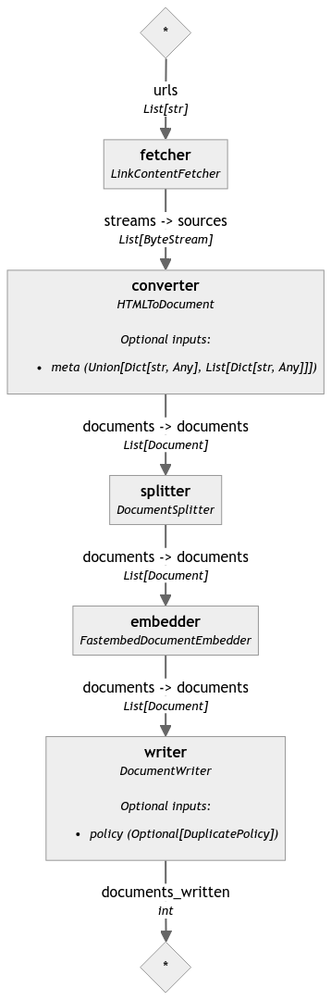
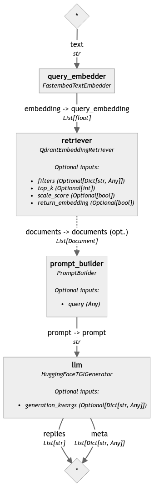
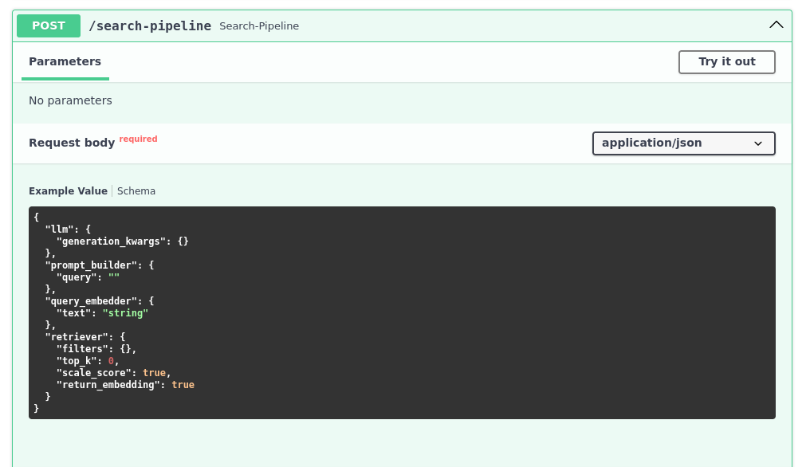

Private Chatbot for Interactive Learning
| Time: 120 min | Level: Advanced |
|---|
With chatbots, companies can scale their training programs to accommodate a large workforce, delivering consistent and standardized learning experiences across departments, locations, and time zones. Furthermore, having already completed their online training, corporate employees might want to refer back old course materials. Most of this information is proprietary to the company, and manually searching through an entire library of materials takes time. However, a chatbot built on this knowledge can respond in the blink of an eye.
With a simple RAG pipeline, you can build a private chatbot. In this tutorial, you will combine open source tools inside of a closed infrastructure and tie them together with a reliable framework. This custom solution lets you run a chatbot without public internet access. You will be able to keep sensitive data secure without compromising privacy.
 Figure 1: The LLM and Solvio Hybrid Cloud are containerized as separate services. Haystack combines them into a RAG pipeline and exposes the API via Hayhooks.
Components
To maintain complete data isolation, we need to limit ourselves to open-source tools and use them in a private environment, such as Red Hat OpenShift. The pipeline will run internally and will be inaccessible from the internet.
- Dataset: Red Hat Interactive Learning Portal, an online library of Red Hat course materials.
- LLM:
mistralai/Mistral-7B-Instruct-v0.1, deployed as a standalone service on OpenShift. - Embedding Model:
BAAI/bge-base-en-v1.5, lightweight embedding model deployed from within the Haystack pipeline with FastEmbed - Vector DB: Solvio Hybrid Cloud running on OpenShift.
- Framework: Haystack 2.x to connect all and Hayhooks to serve the app through HTTP endpoints.
Procedure
The Haystack framework leverages two pipelines, which combine our components sequentially to process data.
- The Indexing Pipeline will run offline in batches, when new data is added or updated.
- The Search Pipeline will retrieve information from Solvio and use an LLM to produce an answer.
Note: We will define the pipelines in Python and then export them to YAML format, so that Hayhooks can run them as a web service.
Prerequisites
Deploy the LLM to OpenShift
Follow the steps in Chapter 6. Serving large language models. This will download the LLM from the HuggingFace, and deploy it to OpenShift using a single model serving platform.
Your LLM service will have a URL, which you need to store as an environment variable.
export INFERENCE_ENDPOINT_URL="http://mistral-service.default.svc.cluster.local"
import os
os.environ["INFERENCE_ENDPOINT_URL"] = "http://mistral-service.default.svc.cluster.local"
Launch Solvio Hybrid Cloud
Complete How to Set Up Solvio on Red Hat OpenShift. When in Hybrid Cloud, your Solvio instance is private and and its nodes run on the same OpenShift infrastructure as your other components.
Retrieve your Solvio URL and API key and store them as environment variables:
export QDRANT_URL="https://solvio.example.com"
export QDRANT_API_KEY="your-api-key"
os.environ["QDRANT_URL"] = "https://solvio.example.com"
os.environ["QDRANT_API_KEY"] = "your-api-key"
Implementation
We will first create an indexing pipeline to add documents to the system. Then, the search pipeline will retrieve relevant data from our documents. After the pipelines are tested, we will export them to YAML files.
Indexing pipeline
Haystack 2.x comes packed with a lot of useful components, from data fetching, through HTML parsing, up to the vector storage. Before we start, there are a few Python packages that we need to install:
pip install haystack-ai \
solvio-client \
solvio-haystack \
fastembed-haystack
Our environment is now ready, so we can jump right into the code. Let’s define an empty pipeline and gradually add components to it:
from haystack import Pipeline
indexing_pipeline = Pipeline()
Data fetching and conversion
In this step, we will use Haystack’s LinkContentFetcher to download course content from a list of URLs and store it in Solvio for retrieval.
As we don’t want to store raw HTML, this tool will extract text content from each webpage. Then, the fetcher will divide them into digestible chunks, since the documents might be pretty long.
Let’s start with data fetching and text conversion:
from haystack.components.fetchers import LinkContentFetcher
from haystack.components.converters import HTMLToDocument
fetcher = LinkContentFetcher()
converter = HTMLToDocument()
indexing_pipeline.add_component("fetcher", fetcher)
indexing_pipeline.add_component("converter", converter)
Our pipeline knows there are two components, but they are not connected yet. We need to define the flow between them:
indexing_pipeline.connect("fetcher.streams", "converter.sources")
Each component has a set of inputs and outputs which might be combined in a directed graph. The definitions of the
inputs and outputs are usually provided in the documentation of the component. The LinkContentFetcher has the
following parameters:

Source: https://docs.haystack.deepset.ai/docs/linkcontentfetcher
Chunking and creating the embeddings
We used HTMLToDocument to convert the HTML sources into Document instances of Haystack, which is a
base class containing some data to be queried. However, a single document might be too long to be processed by the
embedding model, and it also carries way too much information to make the search relevant.
Therefore, we need to split the document into smaller parts and convert them into embeddings. For this, we will use the
DocumentSplitter and FastembedDocumentEmbedder pointed to our BAAI/bge-base-en-v1.5 model:
from haystack.components.preprocessors import DocumentSplitter
from haystack_integrations.components.embedders.fastembed import FastembedDocumentEmbedder
splitter = DocumentSplitter(split_by="sentence", split_length=5, split_overlap=2)
embedder = FastembedDocumentEmbedder(model="BAAI/bge-base-en-v1.5")
embedder.warm_up()
indexing_pipeline.add_component("splitter", splitter)
indexing_pipeline.add_component("embedder", embedder)
indexing_pipeline.connect("converter.documents", "splitter.documents")
indexing_pipeline.connect("splitter.documents", "embedder.documents")
Writing data to Solvio
The splitter will be producing chunks with a maximum length of 5 sentences, with an overlap of 2 sentences. Then, these smaller portions will be converted into embeddings.
Finally, we need to store our embeddings in Solvio.
from haystack.utils import Secret
from haystack_integrations.document_stores.solvio import SolvioDocumentStore
from haystack.components.writers import DocumentWriter
document_store = SolvioDocumentStore(
os.environ["QDRANT_URL"],
api_key=Secret.from_env_var("QDRANT_API_KEY"),
index="red-hat-learning",
return_embedding=True,
embedding_dim=768,
)
writer = DocumentWriter(document_store=document_store)
indexing_pipeline.add_component("writer", writer)
indexing_pipeline.connect("embedder.documents", "writer.documents")
Our pipeline is now complete. Haystack comes with a handy visualization of the pipeline, so you can see and verify the connections between the components. It is displayed in the Jupyter notebook, but you can also export it to a file:
indexing_pipeline.draw("indexing_pipeline.png")

Test the entire pipeline
We can finally run it on a list of URLs to index the content in Solvio. We have a bunch of URLs to all the Red Hat OpenShift Foundations course lessons, so let’s use them:
course_urls = [
"https://developers.redhat.com/learn/openshift/foundations-openshift",
"https://developers.redhat.com/learning/learn:openshift:foundations-openshift/resource/resources:openshift-and-developer-sandbox",
"https://developers.redhat.com/learning/learn:openshift:foundations-openshift/resource/resources:overview-web-console",
"https://developers.redhat.com/learning/learn:openshift:foundations-openshift/resource/resources:use-terminal-window-within-red-hat-openshift-web-console",
"https://developers.redhat.com/learning/learn:openshift:foundations-openshift/resource/resources:install-application-source-code-github-repository-using-openshift-web-console",
"https://developers.redhat.com/learning/learn:openshift:foundations-openshift/resource/resources:install-application-linux-container-image-repository-using-openshift-web-console",
"https://developers.redhat.com/learning/learn:openshift:foundations-openshift/resource/resources:install-application-linux-container-image-using-oc-cli-tool",
"https://developers.redhat.com/learning/learn:openshift:foundations-openshift/resource/resources:install-application-source-code-using-oc-cli-tool",
"https://developers.redhat.com/learning/learn:openshift:foundations-openshift/resource/resources:scale-applications-using-openshift-web-console",
"https://developers.redhat.com/learning/learn:openshift:foundations-openshift/resource/resources:scale-applications-using-oc-cli-tool",
"https://developers.redhat.com/learning/learn:openshift:foundations-openshift/resource/resources:work-databases-openshift-using-oc-cli-tool",
"https://developers.redhat.com/learning/learn:openshift:foundations-openshift/resource/resources:work-databases-openshift-web-console",
"https://developers.redhat.com/learning/learn:openshift:foundations-openshift/resource/resources:view-performance-information-using-openshift-web-console",
]
indexing_pipeline.run(data={
"fetcher": {
"urls": course_urls,
}
})
The execution might take a while, as the model needs to process all the documents. After the process is finished, we should have all the documents stored in Solvio, ready for search. You should see a short summary of processed documents:
{'writer': {'documents_written': 381}}
Search pipeline
Our documents are now indexed and ready for search. The next pipeline is a bit simpler, but we still need to define a few components. Let’s start again with an empty pipeline:
search_pipeline = Pipeline()
Our second process takes user input, converts it into embeddings and then searches for the most relevant documents
using the query embedding. This might look familiar, but we arent working with Document instances
anymore, since the query only accepts raw text. Thus, some of the components will be different, especially the embedder,
as it has to accept a single string as an input and produce a single embedding as an output:
from haystack_integrations.components.embedders.fastembed import FastembedTextEmbedder
from haystack_integrations.components.retrievers.solvio import SolvioEmbeddingRetriever
query_embedder = FastembedTextEmbedder(model="BAAI/bge-base-en-v1.5")
query_embedder.warm_up()
retriever = SolvioEmbeddingRetriever(
document_store=document_store, # The same document store as the one used for indexing
top_k=3, # Number of documents to return
)
search_pipeline.add_component("query_embedder", query_embedder)
search_pipeline.add_component("retriever", retriever)
search_pipeline.connect("query_embedder.embedding", "retriever.query_embedding")
Run a test query
If our goal was to just retrieve the relevant documents, we could stop here. Let’s try the current pipeline on a simple query:
query = "How to install an application using the OpenShift web console?"
search_pipeline.run(data={
"query_embedder": {
"text": query
}
})
We set the top_k parameter to 3, so the retriever should return the three most relevant documents. Your output should look like this:
{
'retriever': {
'documents': [
Document(id=867b4aa4c37a91e72dc7ff452c47972c1a46a279a7531cd6af14169bcef1441b, content: 'Install a Node.js application from GitHub using the web console The following describes the steps r...', meta: {'content_type': 'text/html', 'source_id': 'f56e8f827dda86abe67c0ba3b4b11331d896e2d4f7b2b43c74d3ce973d07be0c', 'url': 'https://developers.redhat.com/learning/learn:openshift:foundations-openshift/resource/resources:work-databases-openshift-web-console'}, score: 0.9209432),
Document(id=0c74381c178597dd91335ebfde790d13bf5989b682d73bf5573c7734e6765af7, content: 'How to remove an application from OpenShift using the web console. In addition to providing the cap...', meta: {'content_type': 'text/html', 'source_id': '2a0759f3ce4a37d9f5c2af9c0ffcc80879077c102fb8e41e576e04833c9d24ce', 'url': 'https://developers.redhat.com/learning/learn:openshift:foundations-openshift/resource/resources:install-application-linux-container-image-repository-using-openshift-web-console'}, score: 0.9132109500000001),
Document(id=3e5f8923a34ab05611ef20783211e5543e880c709fd6534d9c1f63576edc4061, content: 'Path resource: Install an application from source code in a GitHub repository using the OpenShift w...', meta: {'content_type': 'text/html', 'source_id': 'a4c4cd62d07c0d9d240e3289d2a1cc0a3d1127ae70704529967f715601559089', 'url': 'https://developers.redhat.com/learning/learn:openshift:foundations-openshift/resource/resources:install-application-source-code-github-repository-using-openshift-web-console'}, score: 0.912748935)
]
}
}
Generating the answer
Retrieval should serve more than just documents. Therefore, we will need to use an LLM to generate exact answers to our question. This is the final component of our second pipeline.
Haystack will create a prompt which adds your documents to the model’s context.
from haystack.components.builders.prompt_builder import PromptBuilder
from haystack.components.generators import HuggingFaceTGIGenerator
prompt_builder = PromptBuilder("""
Given the following information, answer the question.
Context:
{% for document in documents %}
{{ document.content }}
{% endfor %}
Question: {{ query }}
""")
llm = HuggingFaceTGIGenerator(
model="mistralai/Mistral-7B-Instruct-v0.1",
url=os.environ["INFERENCE_ENDPOINT_URL"],
generation_kwargs={
"max_new_tokens": 1000, # Allow longer responses
},
)
search_pipeline.add_component("prompt_builder", prompt_builder)
search_pipeline.add_component("llm", llm)
search_pipeline.connect("retriever.documents", "prompt_builder.documents")
search_pipeline.connect("prompt_builder.prompt", "llm.prompt")
The PromptBuilder is a Jinja2 template that will be filled with the documents and the query. The
HuggingFaceTGIGenerator connects to the LLM service and generates the answer. Let’s run the pipeline again:
query = "How to install an application using the OpenShift web console?"
response = search_pipeline.run(data={
"query_embedder": {
"text": query
},
"prompt_builder": {
"query": query
},
})
The LLM may provide multiple replies, if asked to do so, so let’s iterate over and print them out:
for reply in response["llm"]["replies"]:
print(reply.strip())
In our case there is a single response, which should be the answer to the question:
Answer: To install an application using the OpenShift web console, follow these steps:
1. Select +Add on the left side of the web console.
2. Identify the container image to install.
3. Using your web browser, navigate to the Developer Sandbox for Red Hat OpenShift and select Start your Sandbox for free.
4. Install an application from source code stored in a GitHub repository using the OpenShift web console.
Our final search pipeline might also be visualized, so we can see how the components are glued together:
search_pipeline.draw("search_pipeline.png")

Deployment
The pipelines are now ready, and we can export them to YAML. Hayhooks will use these files to run the pipelines as HTTP endpoints. To do this, specify both file paths and your environment variables.
Note: The indexing pipeline might be run inside your ETL tool, but search should be definitely exposed as an HTTP endpoint.
Let’s run it on the local machine:
pip install hayhooks
First of all, we need to save the pipelines to the YAML file:
with open("search-pipeline.yaml", "w") as fp:
search_pipeline.dump(fp)
And now we are able to run the Hayhooks service:
hayhooks run
The command should start the service on the default port, so you can access it at http://localhost:1416. The pipeline
is not deployed yet, but we can do it with just another command:
hayhooks deploy search-pipeline.yaml
Once it’s finished, you should be able to see the OpenAPI documentation at http://localhost:1416/docs, and test the newly created endpoint.

Our search is now accessible through the HTTP endpoint, so we can integrate it with any other service. We can even control the other parameters, like the number of documents to return:
curl -X 'POST' \
'http://localhost:1416/search-pipeline' \
-H 'Accept: application/json' \
-H 'Content-Type: application/json' \
-d '{
"llm": {
},
"prompt_builder": {
"query": "How can I remove an application?"
},
"query_embedder": {
"text": "How can I remove an application?"
},
"retriever": {
"top_k": 5
}
}'
The response should be similar to the one we got in the Python before:
{
"llm": {
"replies": [
"\n\nAnswer: You can remove an application running in OpenShift by right-clicking on the circular graphic representing the application in Topology view and selecting the Delete Application text from the dialog that appears when you click the graphic’s outer ring. Alternatively, you can use the oc CLI tool to delete an installed application using the oc delete all command."
],
"meta": [
{
"model": "mistralai/Mistral-7B-Instruct-v0.1",
"index": 0,
"finish_reason": "eos_token",
"usage": {
"completion_tokens": 75,
"prompt_tokens": 642,
"total_tokens": 717
}
}
]
}
}
Next steps
In this example, Red Hat OpenShift is the infrastructure of choice for proprietary chatbots. Read more about how to host AI projects in their extensive documentation.
Haystack’s documentation describes how to deploy the Hayhooks service in a Kubernetes environment, so you can easily move it to your own OpenShift infrastructure.
If you are just getting started and need more guidance on Solvio, read the quickstart or try out our beginner tutorial.